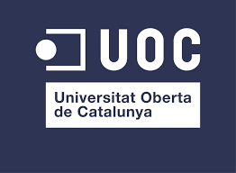
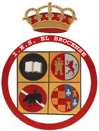

Estudios y formación
Universitat Oberta de Catalunya

Ingeniero Técnico en Informática de Gestión
Universidad de Alcalá de Henares
Especialista en internet y comercio electrónico
Instituto de Bachillerato el Brocense
